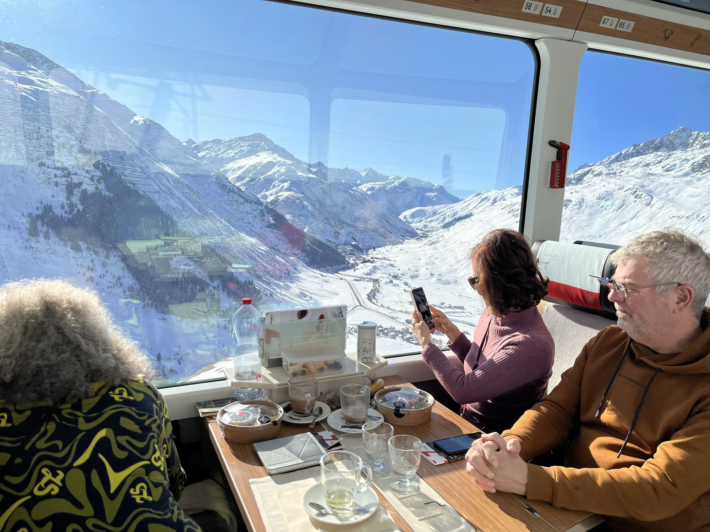
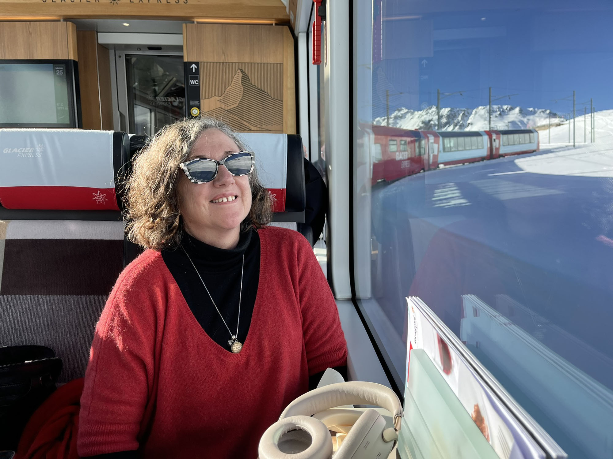
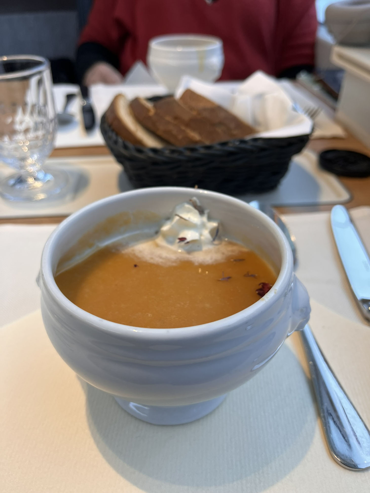
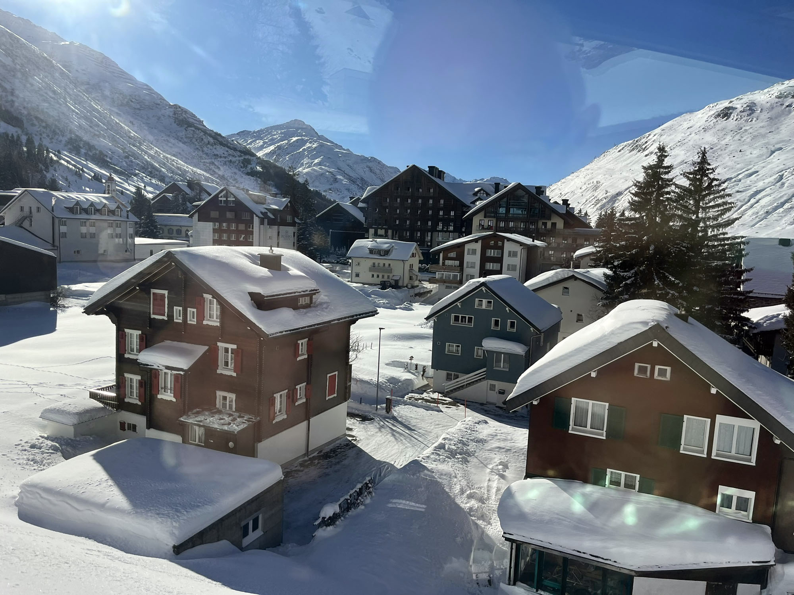
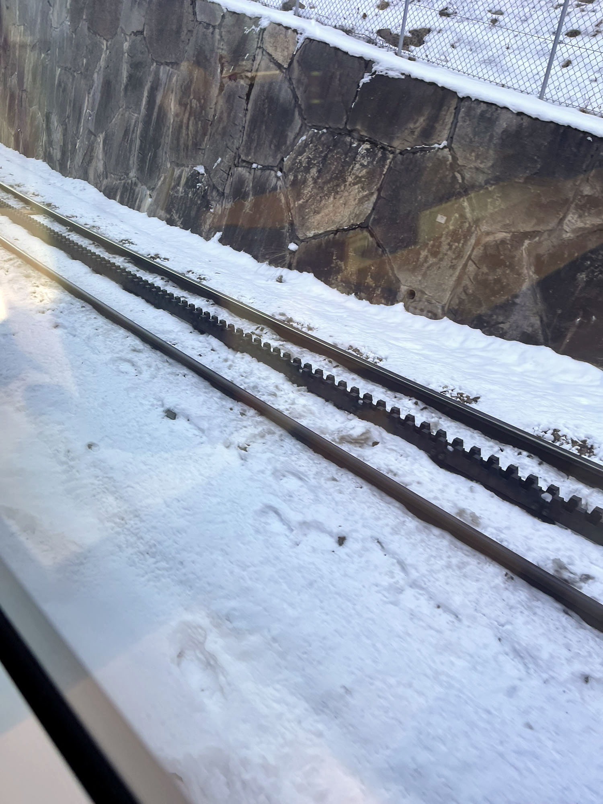
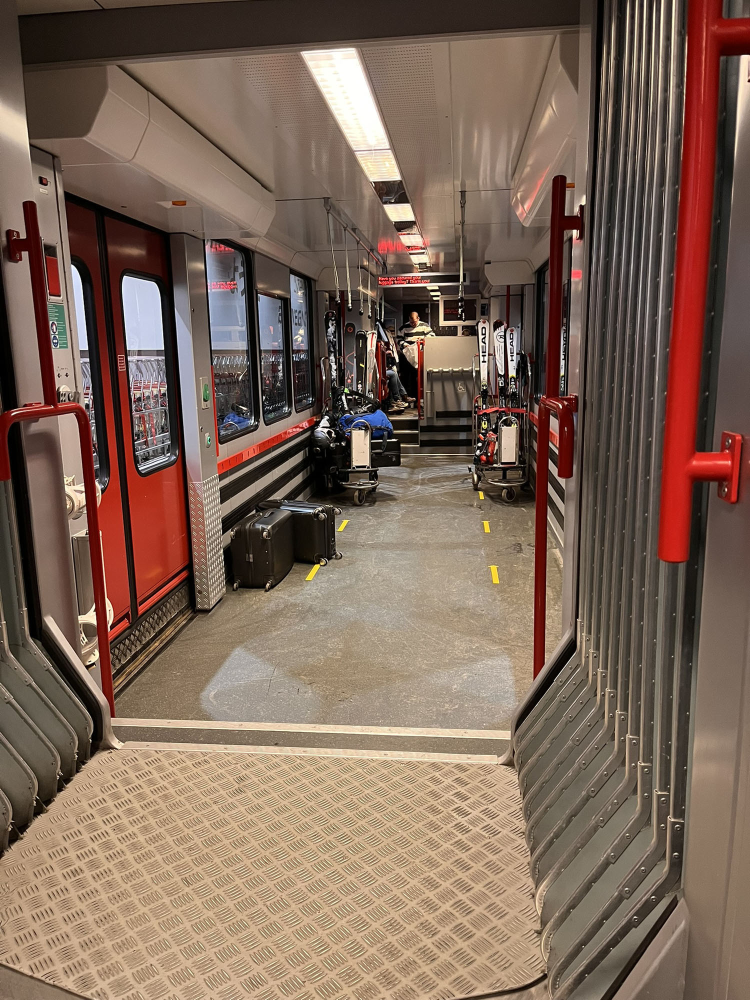
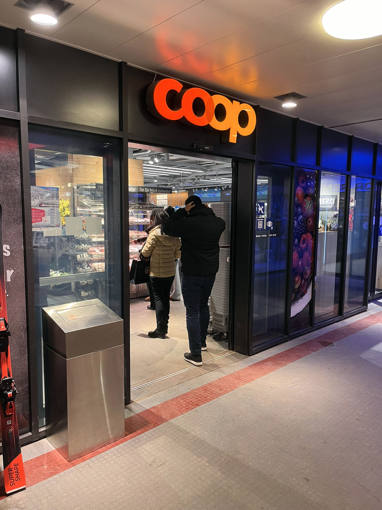
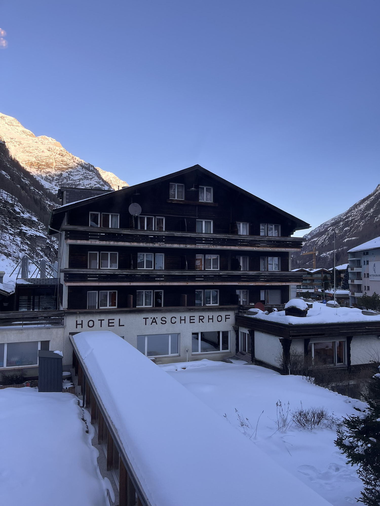
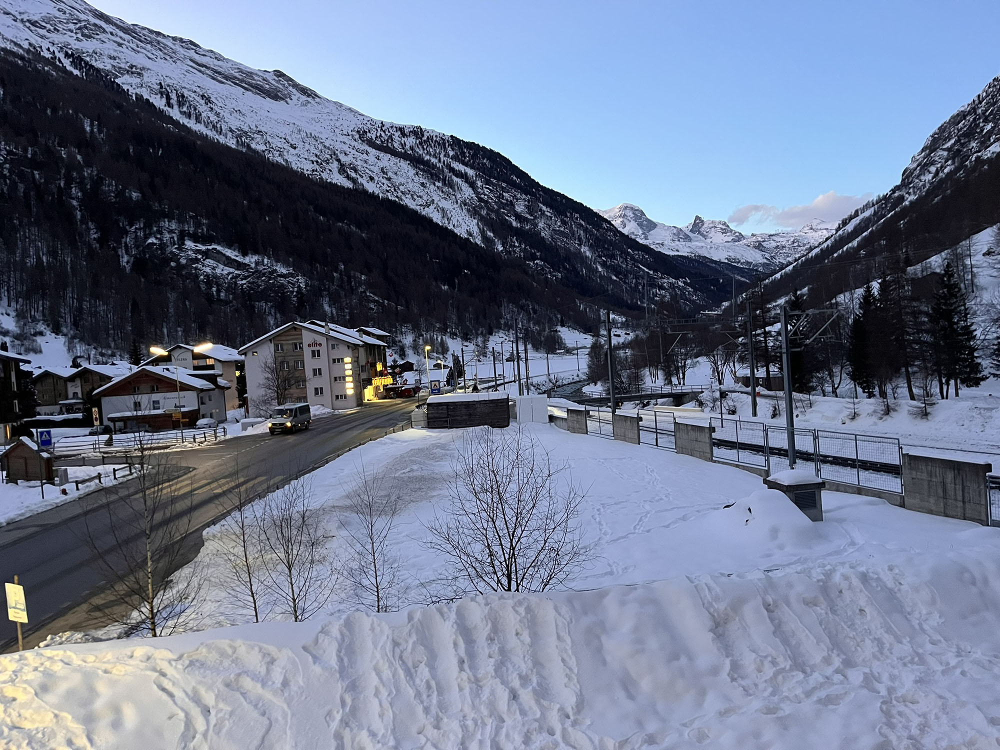

The Glacier Express, along with our cruise on the Hurtigruten up the coast of Norway, was one of the two expeditions that we booked before leaving Australia. Everything else on the trip was relatively spontaneous.
After our Coop breakfast we made the sensible decision to catch a taxi down to the railway station rather than taking up Mark's suggestion of using our cases as toboggans. The cost was 27 CHF, which was quite decent and the driver was very amiable.
If you're experienced with walking on snow and ice, you may not need to read this, but for the rest of us for whom trudging through the tundra is not part of the daily grind, take care on the footpaths and roads in any ice-bound centre. A nurse in Norway told us that the majority of hospital admissions in winter are men, in particular, thinking that they have non-slip feet and titanium bones.
Being the sceptical kind of people that we are, we tried to dampen our expectations of what we were about to behold. All the superlatives that had been written about this trip had us doubting its worthiness. We weren't being sponsored or paid to travel; this was all on our own coin.
Needless to say, it was as spectacular and as fascinating as those reviews all attest and we were gobsmacked by the incredible views, the creative engineering as well as the comfort and elegance of the train.

If you have a Eurail pass the Glacier Express is included in the price, however you will have to pay extra to reserve your seat.
We travelled in second class, which makes first class here in Australia look like a cattle truck. Meals, of course, were expensive but we had moved past that, a little bit, but we did eat tremendously well. That quality vs quantity equation on this occasion was nicely balanced. We had a delicious and generous serving of a pumpkin and chestnut soup followed by sauteed chicken and mushroom along with carrots and spaetzle.


It goes without saying that Switzerland is not only endlessly beautiful, but that tourism plays a major role in their economy. During the eight hour trip we passed numerous villages that all had some kind of ski resort nearby. Many of the hills adjacent to the railway line were lined with barriers to stop avalanches from damaging the line. When we passed through, the valleys were dotted with gingerbread houses and barns where the animals would spend the winter.
I used to think that Gingerbread houses, the type that you eat, were just some kind of awful European romanticised and commercialised Christmas treat, but they're real and look far better in a field of snow than on a Christmas table during a 40c Australian Christmas.

For the engineering-minded the Glacier Express crosses 291 bridges, slides through 91 tunnels, and with the help of an ingenious ratcheting system, it gets to the Oberalp Pass and you're 2033 metres above sea level.


Using our trusty Hotels.com.au app, we had booked the Hotel Täscherhof for two nights. The Glacier Express doesn't stop in Täsch, so you will need to travel into Zermatt and then using your Eurail pass take the 12 minute shuttle ride back to Täsch. It's really no big deal because Zermatt is quite hectic and crowded, whereas Täsch is cheaper, much quieter and with the shuttle running every 20 minutes, it's crazily efficient.
We arrived at 5pm so we loaded up with more breakfast goodies, a falafel and salad pack, and a bottle of Swiss wine from the Coop in Zermatt before catching the shuttle back to Hotel Täscherhof, which we were pleased to find is adjacent to the railway station.


The older part of the hotel had a great feel about it, all that exposed timber and colourful carpet just make you feel welcome. They even gave us a free upgrade to one of their new rooms and although it was modern in its design, the heated bathroom floor and ample space made it extremely comfortable. Like many hotels there was no fridge in the room, so we put our milk out on the balcony.

Many of the cheaper, but still comfortable hotel rooms throughout Europe often lack items such as tea and coffee making facilities, or a fridge. Use our brilliant AI travel planner to quickly help you find the perfect room.
Having been upgraded, we naturally decided to repay the favour by enjoying a drink at the bar. This is where we discovered that many of the guests eating there were locals. Turns out that Hotel Täscherhof was very popular with the locals because it had a great restaurant, one that we took full advantage of with a booking for our second night.
More about that in our next post where we quite literally reach the dizzying heights of our trip to Switzerland.